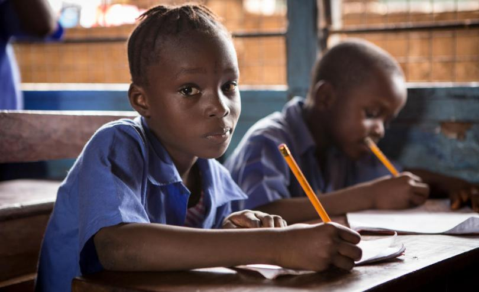

Dropout Prevention Database
Menu

Our Goal
Save the children works towards helping children and securing their education. Every year the
organization reports children who drop out from schools all around the world. They have most of the
data, but lack a way to reach the right and influential people, who can help resolve this issue. That is
why our group will focus on African countries who struggle with issues like these. We will introduce
an IT-system, or a platform that will collect and process every piece of data collected so it reaches the
right people. We will introduce a combination of an existing system, and our system, that will make it
more efficient.
History
In 2012 Save The Children came in contact with the only teacher at one of their mobile schools in
Babile. The teacher shared the reasons behind the number of children dropping out. Babile is a dry
region, which leads to a lot of the students not showing up to school, and instead collect water and
take care of their families. In other instances, girls down to the age of 14 get married before
completing their education. Babile is a strip of land in Ethiopia, and in 2007 the country had a dropout
rate of 60% in primary schools, and many other African countries struggle with the same issue.
Risk
We acknowledge that there are numerous risks involved in creating and distributing our project. For
example, the data can be inaccurate due to corrupt governments who tamper with the data.
Furthermore, the participation from teachers can be lacking if they are not obligated to use it. There is
also concern to be raised around the pricing of the project, and the security of the data collected.
Financing
FSeveral humanitarian organizations already exist that finance humanitarian projects, such as GSK
(GlaxoSmithKline), UNICEF, Humanitarian Innovation Fund. Banks such as DNB and World Bank
could also be interested in funding the project as it could be beneficial to them, in terms of good PR.
Private investors and crowdsourcing could also be a source of funding. Google and Microsoft could
also be interested in sharing existing technology to analyze the data. The project could also be
financed by cooperation between several humanitarian organizations and states.